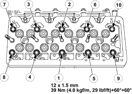

Cylinder Head Gasket Grade Selection
- Carefully remove carbon deposits and gasket residue from the piston top face and the cylinder body upper surface.

- Use a dial indicator to measure the piston head projection at measuring points (A) and (B) on the piston head and measuring points (C) and (D) on the cylinder body. Measure piston projection for each cylinder.

- Note the highest measured value. This will determine the cylinder head gasket thickness.
Piston head projection must be within the range shown in the above table.
If the piston head projection is beyond the above range, engine must not be reassembled.
Piston head projection:
0.58 – 0.78 mm
- Select a cylinder head gasket of the appropriate thickness.

Cylinder Head Installation
- Align the cylinder body dowels and the cylinder head dowel holes. Carefully set the cylinder head to the cylinder head gasket.
- Apply engine oil to the cylinder head fixing bolt threads and setting faces.
- Tighten the cylinder head bolts to the specified torque in three steps following the numerical order shown in the illustration.
NOTE: Cylinder head bolt can not be reused.
Cylinder head bolt specified torque:
39 Nm (4.0 kgf/m, 29 lbf/ft) + 60° + 60°
